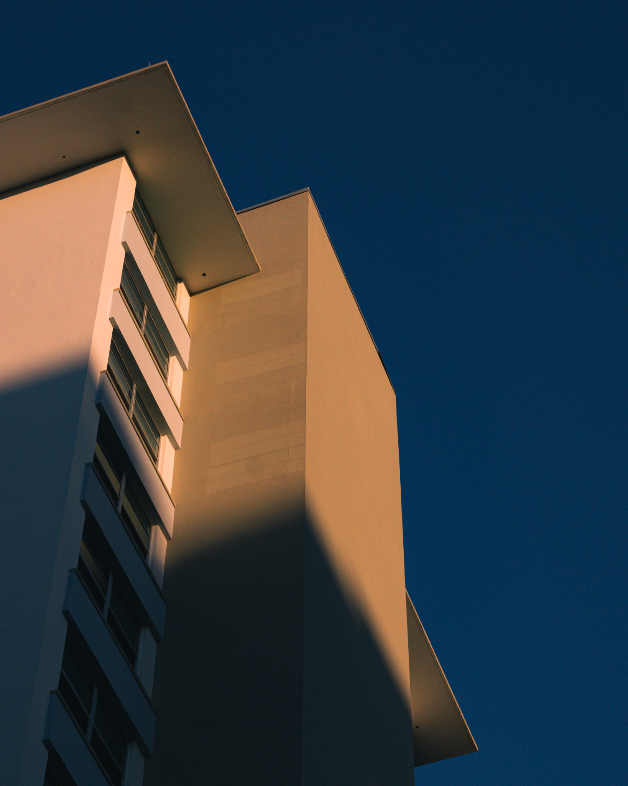

Hello and welcome to my photo gallery. These are some of my favorite pictures
I have taken
over the last few months. I hope you enjoy them! Scroll to the end to learn a bit about me!



Hi! My name is Allen and one of my biggest passions is photogragphy. Like mention before
this is my website showcasing
some of my favorite photos I have taken. I like to shoot mainly
car and street photgrapghy but I am interested in
shooting all types in the future. I am now
just getting serious with it and really diving into the art.
I plan to shoot a lot more through
out the year and elavate my skills. Thank you for visiting!